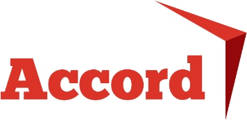
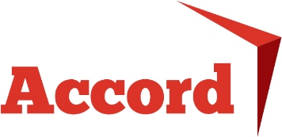

Stirchley Co-operative Development
Developing and growing co-operation in Stirchley
Frequently Asked Questions

Stirchley Co-operative Development (SCD) is a group of local housing and worker co-operatives who are building an affordable and eco-friendly residential and retail premises in the heart of Stirchley. We will be developing land on Pershore Road to house three local businesses along with 45 apartments.
Where?
We are purchasing the derelict land on the corner of Hunts Road and Pershore Road to the right of the British Oak pub.
Who is involved?
SCD has been developed over the last decade by local workers co-operatives Birmingham Bike Foundry, Loaf Bakery & Cookery School and Artefact Projects along with local housing co-operatives, Federici and Gung Ho. We are working with Accord, a housing association with a track record of building cost-conscious ecological co-operative housing.
We are buying the land outright from Seven Capital and will not be part of their development around Hazelwell Lane.
While we are a co-op, we are not affiliated with "The Co-op" supermarket chain.
How will it be managed?
The building will be owned by SCD whose membership is comprised of and restricted to the residents and businesses occupying it.
The building will be run on Somerset Rules for Co-operative Societies with a constitution agreed to by all members. Regular meetings with votes fairly distributed will decide on issues as they arise.
Effectively, once the mortgage is paid, the building is owned and run by the tenants, for as long as they remain tenants.
Where's the money coming from?
Roughly half of the building costs will come from Homes England, the government body that funds the development of affordable social housing. The other half will be a mortgage from an ethical bank or building society. Rents will cover the mortgage, maintenance and management costs.
What is "affordable" and how is that achieved?
"Affordable Housing" is an official term for housing that meets certain criteria such as charging rents below market rates. We are registered with Homes England as a provider of affordable housing and will have to abide by these criteria.
In addition:
- Accord, our partner, specialise in affordable housing, both in the construction and running of the building.
- Energy efficiency, from insulation to solar panels, will keep running costs down.
- In the event of SCD generating a surplus, any profits will be reinvested in the building, increasing efficiency and reducing costs.
Can anyone live there?
There will be criteria for living at SCD, the main one being you must be in need of housing (ie, not be a home-owner) and agree to the mutually agreed rules of the co-operative. Within reason, we will prioritise people already living in the local area in need of decent affordable housing.
Anyone can apply to live in the housing provided by SCD and there will be an application process for any prospective tenants. Anyone who becomes a tenant also becomes a member of the co-operative and has democratic input (via voting) into the management of the building. There is an understanding that members should contribute a small amount of time to the overall running and management of the project.
As a registered provider of affordable housing we will be accepting applications from the Birmingham council waiting list.
We will be providing a number of wheelchair accessible flats and hope to take into consideration people with a variety of access needs. We will also be child and family friendly.
Community cohesion is important to us and we will encourage members new to the area to get involved in the many groups in Stirchley.
What businesses will be operating from the ground floor?
The ground floor of the building is being designed around the needs of the three founder workers co-ops, allowing for changes of occupancy over the 50 years of the building's minimum lifespan.
- Birmingham Bike Foundry is a cycle repair shop. It will house a workshop and retail areas.
- Loaf is a bakery and cookery school with a kitchen, shop and classroom.
- Artefact Projects is an art space housing exhibitions, performances and a cafe/bar.
All three will see their space and activities expanding significantly. In the event of a founder business leaving, future occupant businesses must be constituted as a workers co-operative.
SCD itself aims to establish a "centre of excellence" for co-operative businesses in the region, encouraging more workers co-operatives in Stirchley by offering advice and support. In the long term we are interested in undertaking further developments in the local area, particularly in housing.
How will this benefit Stirchley?
We see benefits coming in a range of ways.
- Our building will be a long-term asset contributing to the regeneration of the area, sensitive to the past and ambitious about Stirchley’s common future.
- We offer a sustainable alternative to private rental, tackling local housing issues by providing affordable accommodation and work space under common ownership.
- Over the last decade we have helped drive locally led development in Stirchley, creating a commercial environment and customer base for new businesses to establish on the high street while respecting the history and heritage of Stirchley.
- Stirchley has a 150 year history of co-operative organisations, from TASCOs to the present day. We aim to create a "centre of excellence" for co-operatives in the Midlands assisting new and established organisations to adopt a sustainable co-operative model.
- With the exception of disabled drivers, we will operate a no-car-ownership policy, encouraging cycling, public transport and car-sharing, helping to normalise car-free living in Birmingham and reduce congestion.
- The building will be as environmentally conscious as possible within the constraints of the budget. Ancillary plans include community composting, a kitchen garden and roof-top bee-hives.
What will it look like?
Our initial plans have been submitted to Birmingham City Council's planning portal and can be viewed at https://www.birmingham.gov.uk/planning with the reference XXXXXXXXXX/XXXX
When?
We aim to start construction in May 2020 and be open in 2022.
About Co-operatives

According to the International Co-operative Alliance, a co-operative is an autonomous association of persons united voluntarily to meet their common economic, social, and cultural needs and aspirations through a jointly-owned and democratically controlled enterprise.
Co-operatives are based on the values of self-help, self-responsibility, democracy, equality, equity and solidarity. In the tradition of their founders, co-operative members believe in the ethical values of honesty, openness, social responsibility and caring for others. Co-operatives also follow the seven Co-operative Principles.
As we are a co-operative, each one of our tenants will have an equal say in the running of the building in which they live or work. We are a non-profit organisation, so any profits will be reinvested as the members see fit. We wish to support and grow other co-operatives in the community by providing them with secure and affordable premises.
Press Release

Co-operation is growing in Stirchley
Affordable housing and retail spaces to add social and economic value to the community
The Birmingham suburb of Stirchley has a 150 year history of co-operative organisations run for the community, by the community. A major new venture revives this spirit for the 21st Century.
Following three years of planning and research, Stirchley Co-operative Development Ltd. (SCD) have agreed to purchase outright land on Hunts Road and Pershore Road, adjacent to the British Oak pub, from developers Seven Capital.
SCD is working toward the construction of a new residential and retail site with space for worker co-operatives and affordable housing in the heart of Stirchley. In partnership with Accord, a housing association with a great track record of building cost-conscious and ecological housing, SCD are developing plans for the site to include new retail premises for established worker co-operatives; Loaf Bakery & Cookery School, Birmingham Bike Foundry and Artefact Projects, and 45 affordable housing units to accommodate individuals, couples and families. The building will be constructed using sustainable and cost-efficient production techniques creating a functional new space that will be a positive addition to the Pershore Road.
The SCD building will be a long-term asset contributing to the regeneration of the area. Run with high levels of community involvement and reduced negative environmental impacts, it aims to be sensitive to the past and ambitious about Stirchley’s common future. Offering a sustainable alternative to private rental, this extensive project will help to tackle local social housing issues by providing accommodation and work space under common ownership.
Construction is set to begin in May 2020 and is scheduled to last two years. During the construction stage the application process will open for those who wish to make their new home in Stirchley as part of the co-operative.
Stirchley Co-operative Development is supported by local businesses and its founding members are all current Stirchley or Selly Park residents. The organisation is incorporated as a business using the Somerset Rules for Co-operative Societies and has been awarded substantial financial support from Homes England.
For more information see the stirchley.coop website.
 www.stirchley.coop

www.stirchley.coop

Job opportunities
Stirchley Co-operative Development Project Manager
| Deadline: | 11/11/2019 |
|---|---|
| Time: | 0.5 FTE (17.5 hours/week) |
| Annual Salary: | £17,710 (£35,420 FTE) |
| Start date: | November 2019 |
| End date: | October 2020 |
| Status: | One year fixed term |
| Location: | South Birmingham |
| Application: | Please submit a recent CV along with a maximum two page covering letter outlining your suitability and how you meet the essential elements of the role as outlined below. |
1. Introduction
Stirchley Co-operative Development Ltd. (SCD) is a multi-stakeholder co-operative society of worker co-ops, housing co-op tenants and investors. Our objects are:
- To promote and preserve co-operation and common ownership in Stirchley
- To build affordable housing and premises for co-operative businesses in an environmentally sustainable way
- To contribute to the regeneration of Stirchley for the benefit of the whole community
We are seeking a person to carry out work on behalf of the members of the co-op in order to deliver the first SCD development. The role should be funded by the Homes England Community Housing Fund Phase 1 (Revenue).
The role will involve:
- Administering the Co-operatives Grant Spend
- Co-ordination of Capacity Funding
- Group Development Work
Specific tasks that must be completed within this role:
- Creation of SCD membership for both trading co-ops and individual housing members in relation to the development
- Preparation of Phase 2 Homes England funding application (following successful receipt of Phase 1 funding)
- Creation of process for the recruitment of housing members/tenants that will be involved in the development
- Other tasks necessary for the successful development of the SCD site
2. Administering Spend on Grant
To complete this element of the post you will need to
- Keep accurate financial records
- Maintain best practice in procurement procedures
- Complete Grant Claim Forms as necessary
- Identify and plot progress towards the project’s key milestones
- Work collaboratively with a range of professionals and Co-operative members to achieve a successful progression of the grant funded work
3. Co-ordination of Capacity Building Work
- Carry out Training Needs Analysis of Board Members and prospective residents
- Facilitate and organise the training programme including notifying participants, sourcing venues and other facilitation work as necessary
- Coordinate with trainers to ensure successful outcomes to training events
- Arrange for the feedback from training session to be considered by the Board to review and inform future training needs
4. Group Development Work
- To facilitate the Board to develop the capacity and skills to complete the project
- To work through the forming and norming stages of development with the groups to enable the project to proceed
- To facilitate group development work
- To develop methods of reporting to the Board which enables them to make informed choices around the development of the site
5. Other Duties
SCD will expect the post holder to complete any other duties that may be reasonably requested of the post holder.
6. Management
In this role, you will aim to protect the user members’ interests in creating a mixed-use development on Stirchley High Street. As such, you will need to balance competing interests of different stakeholders (funders, designers, developers etc.). This will require flexible communication and a focus on understanding stakeholder needs.
At monthly SCD meetings you will report on your progress (200 words max); members may ask you to complete tasks and you will encourage fellow members to do them where possible. It is up to you and SCD to decide together which tasks fall under the remit of this post.
SCD members may wish to call meetings with you outside of the scheduled monthly meeting to discuss your responsibilities in more detail. SCD will nominate a single person for line management duties who will liaise and hold regular 1-to-1 meetings with the member of staff.
7. Equal Opportunities
Stirchley Co-operative Development Ltd. is an equal opportunities employer, we offer flexible working practices and encourage applications from people with suitable skills no matter what their background or ability. If you are interested in this position and feel you have the skills required to deliver this role and contribute to the organisation please apply for this post.
We currently meet in a working space above Birmingham Bike Foundry. This space is not currently fully accessible, so if necessary, alternative meeting space could be sought.
8. Flexible/Remote working
The time commitment for this post is 17.5 hours/week. Some weekend and evening work will be required to cover events and training sessions. Though based in Stirchley, South Birmingham, we can support flexible and some limited remote working arrangements subject to prior agreement.
Please state any requirements for flexible working in your covering letter and at interview.
9. Outline of the Role
i) Skills and experience
Essential
- Experience of project management or project coordination
- Experience of co-operative or community development
Preferred
- Experience of facilitating peer learning and knowledge sharing within a group, network or co-operative
- Experience of delivering a community-led housing or business project
Useful
- Experience of bookkeeping
- Experience in the creation or changes to governance mechanisms
- Experience of business modelling
- Experience of developing communication/marketing materials
- Understanding of the UK planning process
ii) Person specification
Essential
- Able to plan work strategically, prioritising competing aims, timeframes and capacity
- Able to coordinate a volunteer-led organisation
- An excellent verbal and written communicator, enthusiastic and engaging
- Able to understand the needs of both individuals and organisations through discussion
- Competent at using Google Drive and equivalent processing software (Excel, Word etc.)
Preferred
- Ability to facilitate groups in order to enable shared learning
- Motivated by environmental and social justice concerns
Useful
- Experience working with Birmingham City Council
10. Submission and Selection
Please submit your CV and covering letter as a single PDF to vacancies@stirchley.coop before 5pm on 11th November 2019. Candidates will be shortlisted for an in-person or online interview. The interview will last up 60 minutes. Candidates will told as soon as possible whether they have been successful or not.
11. Legal right to work
By the time you commence your employment you must have a legal right to work in the UK.
12. For more information
If you have any questions please email: vacancies@stirchley.coop or telephone: 0121 459 7276
Stirchley Co-operative Development Ltd. is company number RS004496.
As a company registered under the Co-operative and Community Benefit Societies Act 2014, the co-op is regulated by the Financial Conduct Authority (FCA).
Email address for inquiries: info@stirchley.coop